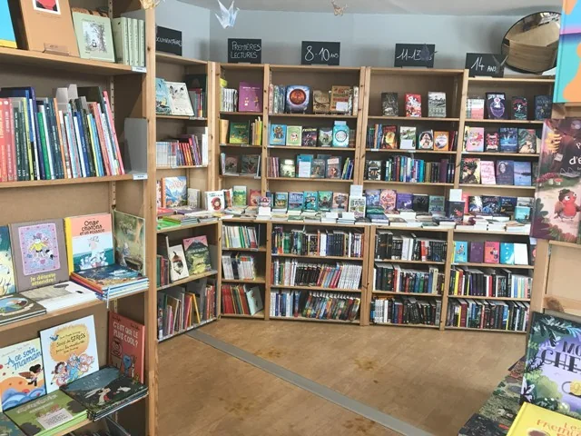
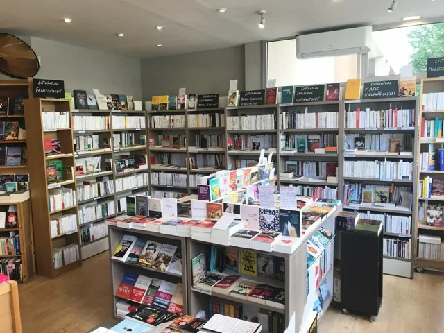
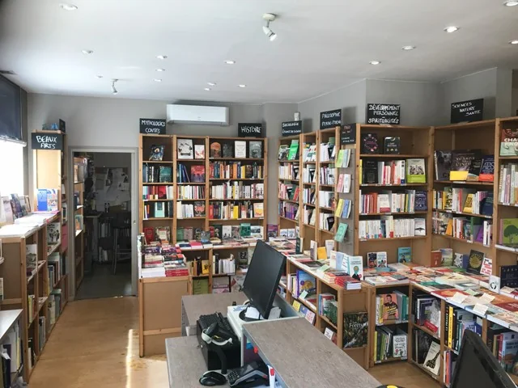
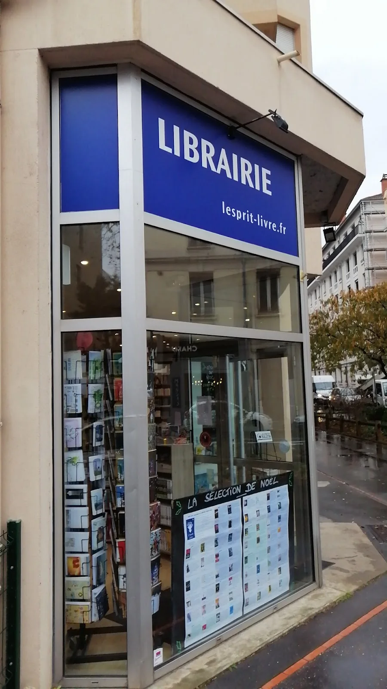

Albums & romans jeunesse
Des lectures pour les plus jeunes, des albums aux romans adolescents.
L'Esprit Livre compose régulièrement des sélections thématiques et saisonnières qui rassemblent les coups de cœur de l'équipe dans de nombreux rayons.
La sélection d'été 2026 rassemble des coups de cœur en littérature, polar, imaginaire, histoire, philosophie, voyages, romans et albums jeunesse, ainsi qu'en bande dessinée.

À Noël, en été ou lors des temps forts de l'année, la librairie rassemble ses recommandations pour faciliter le choix et ouvrir de nouvelles pistes de lecture.

Des lectures pour les plus jeunes, des albums aux romans adolescents.

Des récits contemporains, étrangers, policiers, de science-fiction et de fantasy.

Les sélections sont aussi proposées en version papier directement à la librairie.
Expliquez simplement à qui le livre est destiné et les goûts de la personne : l'équipe pourra vous orienter vers une sélection adaptée.